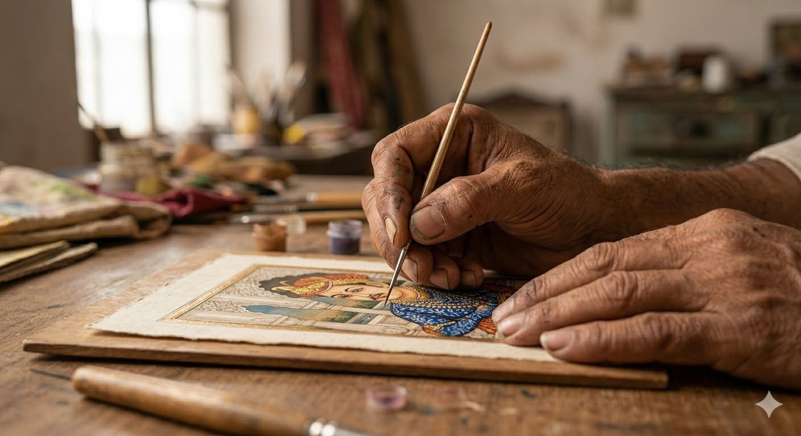

Udaipur ki Shaam
Look closer. There is more here than you can see.
Some things take a lifetime to make.
Four generations, in fact.
Take a moment to see one.
Look closer. There is more here than you can see.
What you cannot see


The making — 21 days

Day 1 – 3
Blank paper. Prepared until perfect. Invisible in the finished work.

Day 4 – 7
The first line. Drawn freehand. No pencil. No guide. No second chance.

Day 8 – 12
First colour. Stone ground by hand. The same stones his guru used.

Day 13 – 17
Layer after layer. The blue alone required fourteen coats.

Day 18 – 21
Gold. Applied with paste made from camel gum. Pressed. Lifted. Done.

"The brush has one hair. The hand does not shake.
This is not talent — it is 34 years."
This painting took 21 days.
And 34 years.
And a lineage no one alive can fully trace.
It will outlast all of them.
There is no other one like it.
There never will be.
Jitendra
Yadav
Painter. Udaipur. Fourth in a lineage passed not through blood — but from guru to student, for over seventy years.

Jitendra Yadav paints in a small studio in Hathi Pol. When three strangers walked in asking questions, he stopped what he was doing, talked to them for half an hour, showed them everything, and asked them to stay for lunch.
He is not a businessman. He has never wanted to be. Business is the thing he does so he can keep doing the thing he is. He puts his soul into every painting — openly, without protection — and sends it out into the world trusting that the right person will find it.
He doesn't negotiate. Not because he is difficult. Because a lower price would dishonour everyone who came before him.
He knows this art form is threatened. Digital tools can now replicate in seconds what took him weeks. He knows this and keeps going anyway — because he believes there will always be people who understand the difference between something made and something generated. Between a hand that gave everything and a machine that gave nothing.
Those people always find him.
"My guru painted this same view of the lake.
His guru before him. I paint it now.
Each time it is different. Each time it is the same.
I hope my students paint it too —
and find something in it that none of us found."
— Jitendra Yadav
The guru who taught the guru who taught Jitendra learned this craft before India's independence. That knowledge — every stroke, every pigment, every proportion — has been carried forward by hand, eye, and complete surrender to the practice.
Jitendra now teaches his own students. The line continues.
Trained under a court artist of Mewar · before 1947
Mastered gold leaf technique · passed it forward
Taught Jitendra for twelve years
Jitendra Yadav · This painting

The colours in this painting did not come from a tube.
Lapis lazuli — ground from stone — for the deep blue of the water. Malachite for the green of the foliage. Cinnabar for the red of the robes. Each pigment sourced, prepared, and ground by hand.
The same pigments his guru used. The colours will not fade in your lifetime.
One of 14 works made this year
21 days × ₹850 per day
₹17,850
The number is not negotiable.
Because his time is the product.
To enquire about this piece, speak with Jitendra Yadav at Pacific Art, Hathi Pol Bazaar, Udaipur.
Munich, Germany
London, United Kingdom
Singapore
New Delhi, India
Pieces from Pacific Art do not sit in storage.
They find homes. They stay there.